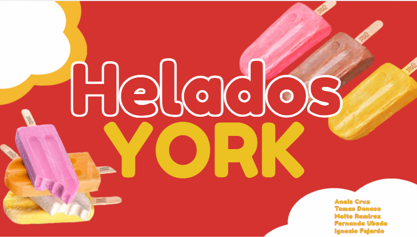
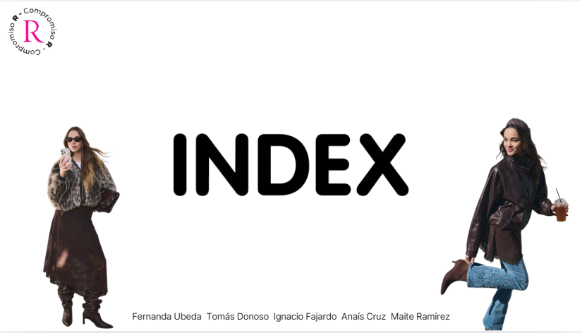

Proyecto de Estrategia y Gestión Comercial
En este proyecto, el enfoque fue en dar una propuesta estratégica sobre marketing y ventas para optimizar la empresa de Helados York.
Ver proyecto →
Aquí algunos proyectos en los que he trabajado.
En este proyecto, el enfoque fue en dar una propuesta estratégica sobre marketing y ventas para optimizar la empresa de Helados York.
Ver proyecto →
Este proyecto consistió en evaluar la posición competitiva de la marca y su entorno mediante herramientas estratégicas como FODA y estudios de mercado.
Ver proyecto →Este proyecto analiza el estado de la marca, aplica estrategia de las 4P, presenta una propuesta táctica de marketing y además incluye KPIs para medir resultados y el presupuesto requerido para llevar a cabo la ejecución del plan.
Ver proyecto →